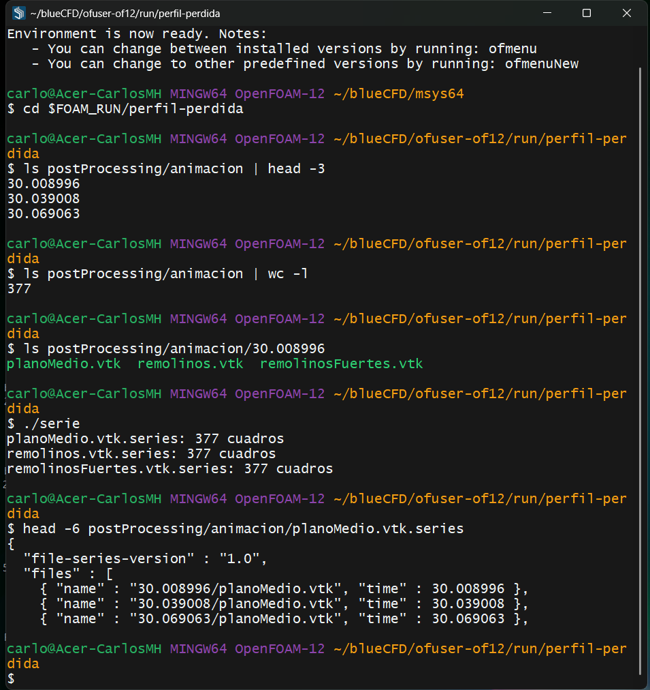
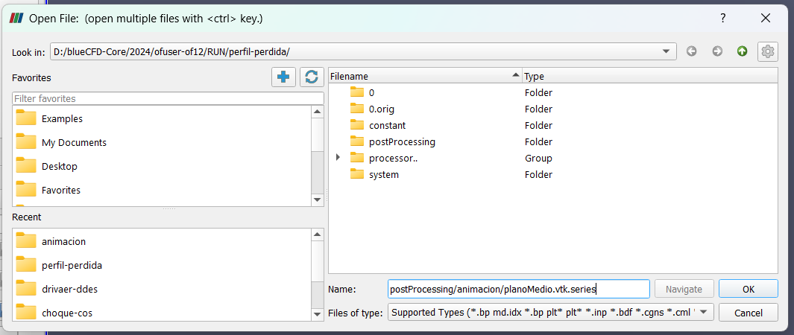
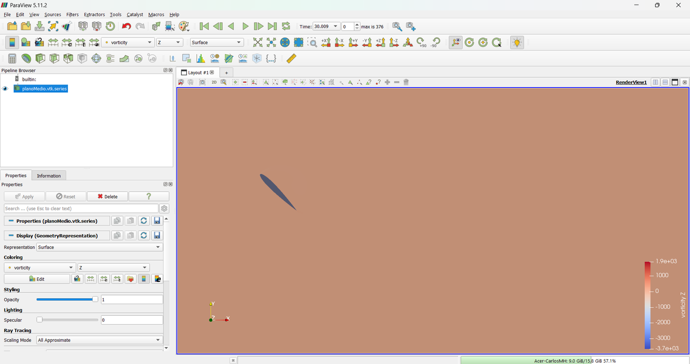
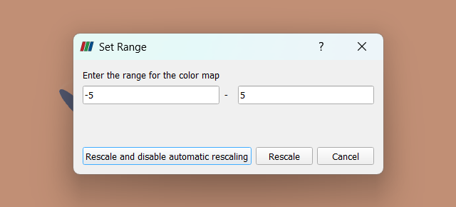
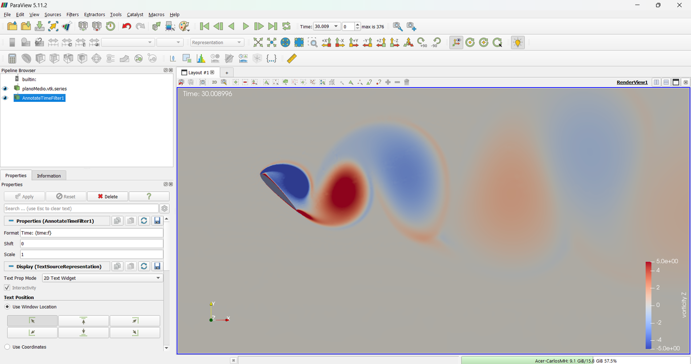
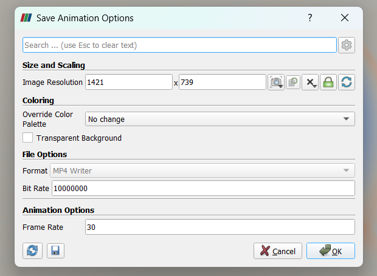
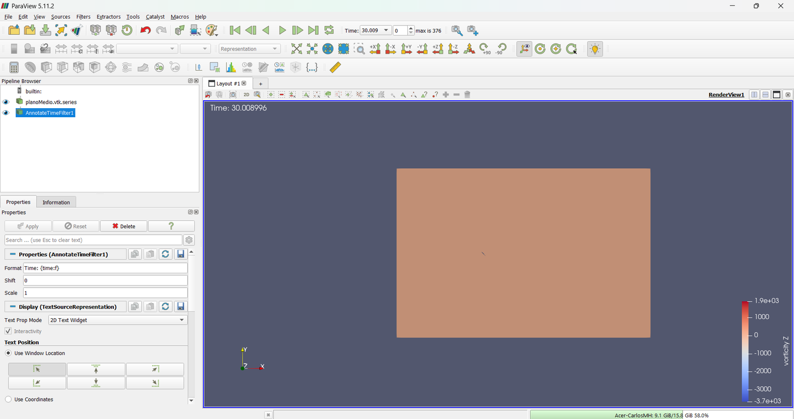

A wake that changes every few hundredths of a chord cannot be shown with a field every five chords. The run itself saves a plane and the vortex surfaces at short intervals, and ParaView turns them into a video: by hand for one model, with a script for three.
OpenFOAM · Flujo incompresible · Tutorial 2.5
La animación del perfil en pérdida
Una estela que cambia cada pocas centésimas de cuerda no se puede mostrar con un campo cada cinco cuerdas. La propia corrida guarda un plano y las superficies de los remolinos a intervalos cortos, y ParaView las convierte en un vídeo: a mano para un modelo, con un guion para los tres.
OpenFOAM · Inkompressible Strömung · Tutorial 2.5
Die Animation des abgerissenen Profils
Ein Nachlauf, der sich alle paar Hundertstel einer Sehne ändert, lässt sich nicht mit einem Feld alle fünf Sehnen zeigen. Die Rechnung selbst speichert eine Ebene und die Wirbelflächen in kurzen Abständen, und ParaView macht daraus ein Video: von Hand für ein Modell, mit einem Skript für drei.
Estimated reading: 40 min (plus the 2D run of Tutorial 2.4)Lectura estimada: 40 min (y la corrida 2D del tutorial 2.4)Lesedauer: ca. 40 min (dazu die 2D-Rechnung aus Tutorial 2.4)Level: undergraduateNivel: licenciaturaNiveau: BachelorVerified on OpenFOAM 12 (blueCFD-Core 2024), ParaView 5.11.2 and ffmpegVerificado en OpenFOAM 12 (blueCFD-Core 2024), ParaView 5.11.2 y ffmpegGeprüft mit OpenFOAM 12 (blueCFD-Core 2024), ParaView 5.11.2 und ffmpeg
Full English translation in preparation. Each section below carries a summary of its content; the complete text, figures and tables are available in the Spanish version, which the ES button above selects.
Make a transient run save what an animation needs, at the right interval and size; open it in ParaView as a time series; fix the colour range; save the animation as a video by hand and with a script.
The problem
Five chords between two pictures
The runs of Tutorial 2.4 write the full fields every 5 chords, once per shedding period: an animation from them would show one picture per vortex. The wake needs about 190 pictures per period.
The theory
How often, how much and what to draw
Sampling interval against the shedding period; playback speed; the size of full fields against surfaces; vorticity on a plane and the Q criterion in 3D; why the colour range must be fixed.
Step by step
From the run to the video
The functions vorticity, Q and surfaces are already in the case of 2.4; ./serie joins the frames into .vtk.series files; ParaView opens one, colours vorticity Z from −5 to 5, adds the time and saves the animation as MP4; pvbatch animacion.py does the same without a window.
The case
The functions and the two scripts
The animation block of system/functions, the serie script and the pvbatch script animacion.py.
Worked example
One model by hand, three with a script
The 2D URANS by hand: 377 frames, 1085 MB, a video of 12.6 s. The three 3D runs with the script: about 400 frames each, 7.2 GB of surfaces per run, two to three minutes of pvbatch per view.
Common errors
When the video shows nothing
The automatic colour range (dominated by the wall); a function changed outside its time window is not re-read; a copied file keeps its old date; the disk; a camera from above pushes the wake out of the frame; an airfoil seen edge-on.
Suggested exercise
Pressure instead of vorticity
Animate the pressure and the velocity magnitude of the 2D URANS with fixed ranges, and decide which one shows the vortices better.
Sources
References
Hunt, Wray and Moin (1988) on the Q criterion; Jeong and Hussain (1995) on vortex identification; the ParaView and OpenFOAM documentation.
Objetivos de aprendizaje
Qué se debe poder hacer al terminar
El tutorial 2.4 mostró que el URANS, el DDES y el LES dan estelas distintas, y que la diferencia se entiende mejor en movimiento. Esta guía enseña a hacer esas animaciones: qué tiene que guardar la corrida, cómo se abre en ParaView y cómo se guarda el vídeo.
Hacer que una corrida transitoria guarde lo que una animación necesita: qué, cada cuánto y cuánto ocupa.
Abrir en ParaView una serie de superficies como una animación.
Fijar el rango de colores para que la estela se vea y no cambie de un cuadro al otro.
Guardar la animación como vídeo, a mano en ParaView y con un guion de pvbatch.
Qué hace falta. El URANS 2D del 2.4 ya calculado en $FOAM_RUN/perfil-perdida (13 minutos con 4 núcleos): el caso ya trae lo necesario para la animación, y la corrida guarda sus cuadros de t = 30 a 40 sin hacer nada más. Para las animaciones 3D de la sección Ejemplo resuelto hacen falta las corridas de un día del 2.4; la guía las muestra, pero no son necesarias para seguirla.
El problema
Cinco cuerdas entre dos imágenes
Las corridas del 2.4 escriben los campos completos cada 5 cuerdas recorridas (writeInterval 5), y el desprendimiento tiene un periodo de 5.0 cuerdas: una animación hecha con esos tiempos mostraría una imagen por remolino, siempre en la misma fase. Para ver cómo nace un remolino en el borde, rueda y se va con la corriente, hacen falta decenas de imágenes por periodo. Escribir los campos completos tan seguido llenaría el disco (sección Teoría).
La solución es que la corrida guarde, mientras calcula, sólo lo que se va a dibujar: un plano y unas superficies, no el volumen. La pregunta de esta guía: ¿qué hay que guardar, cada cuánto, y cómo se convierte en un vídeo?
La teoría
Cada cuánto, cuánto y qué dibujar
Cada cuánto
Un fenómeno que se repite cada \(T\) se ve continuo en un vídeo si cada periodo tiene, por lo menos, unas cuantas decenas de cuadros. Si los cuadros se guardan cada \(n\) pasos de tiempo \(\Delta t\), un periodo tiene
\[ N_T = \frac{T}{n\,\Delta t} \tag{1} \]
cuadros. En el URANS 2D, \(T\) = 5.0 c/U y \(\Delta t\) ≈ 1.33·10−3 c/U; con \(n\) = 20, cada cuadro está a 0.027 c/U del siguiente y un periodo tiene unos 190 cuadros: de sobra. Como el paso de tiempo cambia, los cuadros no quedan exactamente equiespaciados (de 0.020 a 0.034 c/U en la prueba), lo que no se nota en el vídeo.
La velocidad de reproducción la decide quien hace el vídeo. Con 30 cuadros por segundo, los 377 cuadros de t = 30 a 40 duran 12.6 s: las 10 cuerdas recorridas se ven a poco más de una por segundo. Para verlo más lento se baja la cadencia o se guardan más cuadros.
Cuánto ocupa
Qué se guarda
2D
3D
3D, 418 cuadros
planoMedio: el plano z = 0.5 c
2.77
2.77
1.2 GB
remolinos: la isosuperficie \(Q\) = 5
0.06
9.24
3.9 GB
remolinosFuertes: \(Q\) = 20
0.04
5.26
2.2 GB
Un tiempo completo
103
43 GB
Tabla 1.Lo que ocupa una animación. MB por cuadro, medidos en la prueba 2D y en el DDES del 2.4 (VTK binario). El tiempo completo es lo que el solver escribe en cada writeInterval (U, p, \(\tilde\nu\), \(\nu_t\) y el flujo en las caras, en los 8 procesos).
En la malla 3D del 2.4, un tiempo completo —U, p, \(\tilde\nu\), \(\nu_t\) y el flujo en las caras, lo que el solver necesita para seguir— pesa 103 MB. Guardarlo 418 veces serían 43 GB por corrida. Las superficies de la animación pesan 17.3 MB por cuadro y 7.2 GB en total (tabla 1): seis veces menos, y todavía mucho. En 2D, la misma animación ocupa 1.1 GB.
Qué dibujar
Los remolinos son regiones donde el fluido gira. En un plano, lo que lo muestra es la vorticidad perpendicular al plano,
positiva (rojo) donde el aire gira en sentido antihorario y negativa (azul) donde gira en sentido horario. En 3D, la vorticidad no basta: también es grande en una capa límite, donde el aire no gira, sólo se corta. El criterio Q(Hunt, Wray y Moin, 1988) separa las dos cosas: compara la rotación \(\boldsymbol{\Omega}\) con la deformación \(\mathbf{S}\), las partes antisimétrica y simétrica del gradiente de velocidad,
y una superficie de \(Q\) constante y positivo dibuja los tubos de los remolinos. Qué valor de \(Q\) es el que conviene depende del caso: muy bajo, todo es remolino; muy alto, sólo quedan los más fuertes. Para este caso se probaron 2, 5, 20 y 50 \((U_\infty/c)^2\) sobre un tiempo guardado del DDES, y se quedaron dos: 5, que todavía muestra la ruptura en remolinos chicos, y 20, sólo los grandes.
El rango de colores
ParaView pone, por omisión, el rango de colores del mínimo al máximo de los datos. En una animación eso tiene dos problemas: el rango cambia de un cuadro al otro, y los colores con él; y los extremos de la vorticidad están en la capa límite, junto a la pared. En el plano medio del DDES, \(\omega_z\) va de −3219 a 2396 \(U_\infty/c\) en el primer cuadro, y la estela vive entre ±5. El rango se fija a mano, una vez, para toda la animación.
Paso a paso
De la corrida al vídeo
El caso del 2.4 ya hace que la corrida guarde los cuadros: las funciones vorticidad, Q y animacion de system/functions (sección El caso) trabajan de t = 30 a 40. Al terminar ./Allrun urans2d 4, en la terminal de blueCFD-Core:
Ver lo que se guardó.cd $FOAM_RUN/perfil-perdida y ls postProcessing/animacion | wc -l: 377 carpetas, una por cuadro, cada una con planoMedio.vtk, remolinos.vtk y remolinosFuertes.vtk.
Unirlas en una serie:./serie. ParaView no agrupa archivos que están en carpetas distintas; el guion escribe un archivo .vtk.series por superficie con el nombre y el tiempo de cada cuadro (figura 1).

Figura 1.Los cuadros y la serie. En la terminal: la carpeta postProcessing/animacion tiene una subcarpeta por cuadro, con las tres superficies; ./serie escribe un .vtk.series por superficie, y su principio es la lista de archivos con su tiempo.
Abrir ParaView:paraview &, sin nada más (error 3). En ParaView, File ▸ Open (Ctrl+O), escribir postProcessing/animacion/planoMedio.vtk.series en File name y OK (figura 2); en el panel Properties, Apply. La barra de tiempo ya tiene los 377 tiempos («max is 376»: se cuentan desde 0).

Figura 2.Abrir la serie.File ▸ Open empieza en la carpeta desde la que se abrió ParaView, la del caso: basta escribir la ruta de la serie en Name. (La carpeta postProcessing/animacion tiene cientos de subcarpetas; buscar el archivo a mano entre ellas es lento.)
Encuadrar la estela: los botones −Z y Reset Camera ponen el dominio de frente. Como el plano es plano, ParaView pone la vista en modo 2D, con proyección paralela, y en ese modo Adjust Camera no acerca: se usa Zoom To Box (la lupa con un recuadro) y se arrastra un rectángulo sobre el perfil y unas ocho cuerdas de estela.
Colorear por la vorticidad: en la barra de arriba, vorticity y su componente Z. El plano se ve casi de un solo color (figura 3; error 1).

Figura 3.La vorticidad con el rango automático. El plano medio coloreado por \(\omega_z\) con el rango que ParaView elige solo: los extremos están en la capa límite del perfil, y toda la estela queda en el color del cero.
Fijar el rango: el botón Rescale to Custom Data Range, mínimo −5 y máximo 5, y Rescale and disable automatic rescaling (figura 4). El botón Rescale a secas no basta (error 2).

Figura 4.El rango fijo.Rescale to Custom Data Range, de −5 a 5. Es el mismo para todos los cuadros y para las tres corridas 3D.
El tiempo en la imagen: con el buscador de filtros (Ctrl+Espacio), Annotate Time Filter y Apply: escribe el tiempo de cada cuadro en una esquina.
Reproducir: el botón Play de la barra de tiempo (figura 5).

Figura 5.La estela, con el rango fijo. El mismo plano con el rango de −5 a 5, la cámara sobre la estela y el tiempo escrito por Annotate Time Filter; arriba, la barra de tiempo, con el botón Play, el tiempo y el número de cuadro (de 0 a 376). Se ven los remolinos alternados que se desprenden de los dos bordes.
Guardar el vídeo:File ▸ Save Animation… y el nombre animacion.mp4. En el cuadro de opciones (figura 6), ParaView propone la resolución de la vista y Frame Rate 1: se cambia a 30 (error 4) y OK. ParaView recorre los 377 tiempos y escribe el vídeo con su MP4 Writer (figura 7). Al terminar puede abrirse la ventana Output Messages con el aviso «The requested resolution '(1421, 739)' has been changed…»: el MP4 pide un ancho y un alto pares, y ParaView los ajusta (el vídeo de la prueba salió de 1420 × 738 píxeles). No es un error. Con .png en lugar de .mp4, escribe una imagen por cuadro, que se unen con ffmpeg (paso 11).

Figura 6.Las opciones del vídeo. Después de elegir el nombre del archivo, Save Animation pregunta la resolución, el formato (aquí, MP4 Writer, por la extensión) y la cadencia, Frame Rate, que propone en 1 y aquí ya se cambió a 30.Figura 7.El vídeo de ParaView. El archivo que escribió Save Animation en el ensayo: el URANS 2D de t = 30 a 40, a 30 cuadros por segundo (recomprimido para la página).
Sin ventana, con un guion, para varias corridas o varias vistas: pvbatch animacion.py . cuadros "URANS 2D" vorticidad escribe en cuadros/ una imagen por tiempo con la misma vista; con remolinos en lugar de vorticidad, la isosuperficie \(Q\) = 5 en perspectiva.
Unir las imágenes con ffmpeg, que no viene con blueCFD-Core: se instala aparte y se corre en PowerShell, en la carpeta del caso: ffmpeg -framerate 30 -i cuadros/f%03d.png -c:v libx264 -pix_fmt yuv420p vorticidad.mp4. -pix_fmt yuv420p hace que el vídeo se reproduzca en cualquier navegador.
¿A mano o con el guion? A mano se aprende qué hace cada paso y se decide la vista; el guion repite exactamente la misma vista en cada corrida, que es lo que hace falta para comparar modelos. Las animaciones del 2.4 se hicieron con el guion.
El caso
Las funciones y los dos guiones
La parte de system/functions que hace la animación:
// Para la animación (tutorial 2.5): de t = 30 a 40, cada 20 pasos (≈ 0.025 c/U), el plano medio de la envergadura con
// U, p, la vorticidad y Q, y las isosuperficies Q = 5 y 20 (U/c)², en VTK (postProcessing/animacion/<t>/).
vorticidad
{
type vorticity;
libs ("libfieldFunctionObjects.so");
startTime 30;
endTime 40;
executeControl timeStep;
executeInterval 20;
writeControl writeTime;
}
Q
{
type Q;
libs ("libfieldFunctionObjects.so");
startTime 30;
endTime 40;
executeControl timeStep;
executeInterval 20;
writeControl writeTime;
}
animacion
{
type surfaces;
libs ("libsampling.so");
startTime 30;
endTime 40;
writeControl timeStep;
writeInterval 20;
surfaceFormat vtk;
writeFormat binary;
interpolationScheme cellPoint;
fields (U p vorticity Q);
surfaces
(
planoMedio
{
type cutPlane;
planeType pointAndNormal;
point (0 0 0.5);
normal (0 0 1);
interpolate true;
}
remolinos // Q = 5: también los remolinos chicos de la estela 3D
{
type isoSurface;
isoField Q;
isoValue 5;
interpolate true;
}
remolinosFuertes // Q = 20: sólo los grandes (scripts/calibrar_q.py con el DDES a t = 5)
{
type isoSurface;
isoField Q;
isoValue 20;
interpolate true;
}
);
}
vorticidad y Q calculan los campos vorticity y Q cada 20 pasos, de t = 30 a 40 (startTime, endTime); writeControl writeTime hace que, como campos completos, sólo se escriban con los tiempos normales. animacion es una función surfaces: cada 20 pasos corta el plano medio de la envergadura y saca las isosuperficies \(Q\) = 5 y 20, con U, p, la vorticidad y Q interpoladas a sus puntos (cellPoint), y las escribe en VTK binario en postProcessing/animacion/<t>/. Las dos primeras calculan, cada 20 pasos, los campos que usa la tercera en esos mismos pasos, y van antes que ella en el archivo.
El guion serie escribe los archivos que ParaView abre como una serie:
serie
#!/bin/sh
# Une los cuadros de la animación en series que ParaView abre de una vez. La función `animacion` (system/functions)
# guarda cada cuadro en su propia carpeta, postProcessing/animacion/<t>/, y ParaView no agrupa archivos de carpetas
# distintas: este guion escribe, junto a ellas, un archivo .vtk.series por superficie, con el nombre y el tiempo de
# cada cuadro.
#
# ./serie → postProcessing/animacion/planoMedio.vtk.series, remolinos.vtk.series, remolinosFuertes.vtk.series
cd ${0%/*}/postProcessing/animacion 2>/dev/null || { echo "No existe postProcessing/animacion: ¿ya pasó t = 30?"; exit 1; }
for sup in planoMedio remolinos remolinosFuertes; do
ls -d [0-9]* | sort -g | awk -v s=$sup '
BEGIN { printf "{\n \"file-series-version\" : \"1.0\",\n \"files\" : [\n" }
{ printf "%s { \"name\" : \"%s/%s.vtk\", \"time\" : %s }", (NR > 1 ? ",\n" : ""), $1, s, $1 }
END { printf "\n ]\n}\n"; print s ".vtk.series: " NR " cuadros" > "/dev/stderr" }' > $sup.vtk.series
done
El guion animacion.py es el que hizo las animaciones del 2.4: abre la serie de una superficie y el parche del perfil (del propio caso), fija la vista, el rango y la barra de colores, y guarda una imagen por tiempo. Se corre con pvbatch, el ParaView sin ventana:
animacion.py
# -*- coding: utf-8 -*-
"""
Cuadros de la animación del perfil en pérdida (tutorial 2.5), a partir de las superficies que la función `animacion`
de system/functions guarda cada 20 pasos de t = 30 a 40 (postProcessing/animacion/<t>/): el perfil (parche airfoil,
del propio caso) en gris y, según la vista,
vorticidad el plano medio de la envergadura coloreado por la vorticidad ω_z, visto de frente (proyección paralela)
remolinos la isosuperficie Q coloreada por |U|, en perspectiva
Un PNG por tiempo (f000.png, f001.png…); se unen con ffmpeg.
pvbatch animacion_perfil.py <caso> <carpeta de salida> <rótulo> <vista> [cada]
[cada]: usar uno de cada n tiempos (1 por omisión).
"""
import os
import sys
import paraview.simple
from paraview.simple import * # noqa: F401,F403
paraview.simple._DisableFirstRenderCameraReset()
caso, out, rotulo, vista = sys.argv[1], sys.argv[2], sys.argv[3], sys.argv[4]
cada = int(sys.argv[5]) if len(sys.argv) > 5 else 1
os.makedirs(out, exist_ok=True)
carpeta = os.path.join(caso, "postProcessing", "animacion")
tiempos = sorted((d for d in os.listdir(carpeta) if os.path.isdir(os.path.join(carpeta, d))), key=float)[::cada]
superficie = "remolinos.vtk" if vista == "remolinos" else "planoMedio.vtk"
open(os.path.join(caso, "caso.foam"), "a").close()
datos = LegacyVTKReader(FileNames=[os.path.join(carpeta, tiempos[0], superficie)])
if vista == "remolinos":
fuente = GenerateSurfaceNormals(Input=datos) # sombreado suave: sin normales, los triángulos se ven facetados
else:
fuente = Clip(Input=datos) # el plano sólo alrededor del perfil y su estela
fuente.ClipType = "Box"
fuente.ClipType.Position = [-1.5, -2.0, -1]
fuente.ClipType.Length = [9.5, 4.0, 3]
fuente.Invert = 1
fuente.Crinkleclip = 0
try:
fuente.Exact = 1
except AttributeError:
pass
r = OpenFOAMReader(FileName=caso + "/caso.foam")
r.CaseType = "Decomposed Case" if os.path.isdir(os.path.join(caso, "processor0")) else "Reconstructed Case"
r.MeshRegions = ["patch/airfoil"]
r.CellArrays = []
r.UpdatePipelineInformation()
if vista == "remolinos":
perfil = r
else: # visto de frente, el parche del perfil es una línea: se rellena el
corte = Slice(Input=r) # contorno en el plano medio
corte.SliceType = "Plane"
corte.SliceType.Origin = [0, 0, 0.5]
corte.SliceType.Normal = [0, 0, 1]
perfil = Delaunay2D(Input=corte)
v = CreateView("RenderView")
v.ViewSize = [1600, 720]
v.Background = [1, 1, 1]
try:
v.UseColorPaletteForBackground = 0
except AttributeError:
pass
v.OrientationAxesVisibility = 0
df = Show(fuente, v)
if vista == "remolinos":
ColorBy(df, ("POINTS", "U", "Magnitude"))
lut = GetColorTransferFunction("U")
lut.ApplyPreset("Turbo", True)
lut.RescaleTransferFunction(0.0, 2.0)
titulo = "|U| / U"
else:
ColorBy(df, ("POINTS", "vorticity", "Z"))
lut = GetColorTransferFunction("vorticity")
lut.ApplyPreset("Cool to Warm", True)
lut.RescaleTransferFunction(-5.0, 5.0) # la estela: ±20 sólo deja ver las capas junto al perfil
titulo = "vorticidad z (U/c)" # la fuente de ParaView no tiene ω
df.Ambient = 1.0 # sin sombreado: los colores del mapa tal cual
df.Diffuse = 0.0
lut.AutomaticRescaleRangeMode = "Never"
df.SetScalarBarVisibility(v, True)
barra = GetScalarBar(lut, v)
barra.Title = titulo
barra.ComponentTitle = ""
barra.TitleColor = barra.LabelColor = [0, 0, 0]
barra.RangeLabelFormat = "%.0f"
dp = Show(perfil, v)
dp.ColorArrayName = ["POINTS", ""] # color sólido (ColorBy(dp, None) falla sin arreglos en el lector)
dp.DiffuseColor = [0.35, 0.36, 0.40]
dp.Specular = 0.3
texto = Text()
dt = Show(texto, v)
dt.Color = [0, 0, 0]
dt.FontSize = 24
dt.WindowLocation = "Upper Left Corner"
if vista == "remolinos":
v.CameraParallelProjection = 0
v.CameraPosition = [-0.8, 1.9, 6.6] # más de lado que en calibrar_q.py: desde arriba, la estela del DDES
v.CameraFocalPoint = [2.8, 0.1, 0.5] # sube en la imagen y se salía del cuadro
v.CameraViewUp = [0, 1, 0]
v.CameraViewAngle = 30
else:
v.CameraParallelProjection = 1
v.CameraPosition = [3.0, -0.2, 20]
v.CameraFocalPoint = [3.0, -0.2, 0.5]
v.CameraViewUp = [0, 1, 0]
v.CameraParallelScale = 1.9
for i, t in enumerate(tiempos):
datos.FileNames = [os.path.join(carpeta, t, superficie)]
texto.Text = "%s t = %.2f c/U" % (rotulo, float(t))
Render(v)
SaveScreenshot(os.path.join(out, "f%03d.png" % i), v)
print("cuadros:", len(tiempos))
Ejemplo resuelto
Un modelo a mano, tres con un guion
Enunciado: hacer la animación de la vorticidad del URANS 2D a mano, con ParaView, y las de los tres cálculos 3D del 2.4 con el guion; revisar cuánto ocupan y cuánto tardan.
1. El URANS 2D, a mano
La corrida de prueba guardó 377 cuadros, de t = 30.01 a 39.98, que ocupan 1.1 GB. ParaView los convirtió en un vídeo de 12.6 s (figura 7) en unos 30 s. Se ve la calle de remolinos de von Kármán: de cada borde se desprende un remolino por periodo, alternados, y la corriente se los lleva; corriente abajo se van difundiendo.
2. Los tres cálculos 3D, con el guion
Corrida
Cuadros
De t a t
Plano medio (s)
Remolinos (s)
URANS 3D
378
30.02 a 39.98
52
38
DDES
418
30.01 a 39.99
66
121
LES
374
30.00 a 39.97
73
128
Tabla 2.Las animaciones del 2.4, con el guion.pvbatch animacion.py sobre cada corrida, una vez por vista, en la laptop de la serie (sin otra corrida en marcha).
El guion tardó de 38 a 128 s por vista y por corrida (tabla 2). En el DDES y el LES, la vista de los remolinos tarda casi el doble que la del plano, porque sus isosuperficies pesan más; en el URANS es la más rápida, porque sus remolinos casi no pasan de \(Q\) = 5. Los tres vídeos de cada vista se pusieron uno sobre otro con ffmpeg (la animación de la vorticidad del 2.4 y la figura 8). Como los cuadros de cada corrida están cada 20 pasos y el paso de tiempo es distinto en cada una, los tres vídeos tienen distinto número de cuadros; para que avancen juntos, cada uno entra con la cadencia que le da a sus 10 c/U los mismos 13 s.
Figura 8.Los remolinos de los tres cálculos 3D. La isosuperficie \(Q\) = 5 \((U_\infty/c)^2\) coloreada por |U|, de t = 30 a 40, hecha con animacion.py; URANS 3D arriba, DDES en medio y LES abajo.
Con \(Q\) = 5, el URANS sólo muestra los rodillos junto al perfil: corriente abajo, su viscosidad turbulenta difunde los remolinos por debajo de ese valor. No es un defecto de la animación sino de la física del modelo, y es lo que la animación debe enseñar. En el DDES y el LES, la estela es un enjambre de tubos que cambian a lo largo de la envergadura.
Resultado: una animación de un cálculo transitorio se planea antes de correrlo: qué superficies, cada cuántos pasos (aquí, unos 190 cuadros por periodo) y cuánto disco (1.1 GB en 2D, 7.2 GB en 3D, contra 43 GB si se guardaran los campos completos). Con el rango de colores fijo, ParaView lo convierte en un vídeo a mano en un par de minutos, y un guion de pvbatch repite la misma vista en todas las corridas.
Errores frecuentes
Cuando el vídeo no muestra nada
Los siete salieron al preparar esta guía.
1. El rango automático
Al colorear por la vorticidad, ParaView toma el rango de los datos del cuadro actual. Los extremos están en las capas límite del perfil: en el plano medio del URANS 2D, de −3669 a 1879 \(U_\infty/c\) en el primer cuadro, y de −3219 a 2396 en el DDES. La estela, entre ±5, queda en el color del cero, y el vídeo parece vacío (figura 3). Remedio: el rango fijo, a mano (paso 6 de la receta).
2. El rango que vuelve a abrirse
Con Rescale a secas, el rango queda en ±5 y la estela se ve; pero al aplicar el filtro siguiente (aquí, Annotate Time Filter), ParaView vuelve a abrirlo a todo lo que hay en los datos, porque por omisión reajusta el mapa de colores con cada Apply (figura 9). Remedio:Rescale and disable automatic rescaling, que fija el rango y apaga el reajuste. Tampoco conviene la opción de reajustarlo en cada cuadro: los colores cambiarían de significado durante el vídeo.

Figura 9.El rango que vuelve a abrirse. La primera vuelta del ensayo: el rango se fijó con Rescale a secas y la estela se veía; al aplicar Annotate Time Filter, la barra de colores volvió a ir de −3 700 a 1 900 y el plano, a un solo color (todavía sin acercar la cámara).
3. paraview con un archivo, en la terminal de blueCFD
Escribir paraview postProcessing/animacion/planoMedio.vtk.series, con o sin & al final, o la forma con --data=, da
$ paraview postProcessing/animacion/planoMedio.vtk.series
bash: syntax error near unexpected token `postProcessing/animacion/planoMedio.vtk.series'
En la terminal de blueCFD-Core, paraview no es el programa sino un alias que lo corre en un subshell: type paraview responde
$ type paraview
paraview is aliased to `(export PATH=/bin:/usr/bin:/usr/local/bin:$ParaView_DIR/bin; paraview)'
y lo que se escribe después del alias queda fuera del paréntesis, donde bash no lo espera. Remedio:paraview & sin argumentos y la serie con File ▸ Open, como en la receta.
4. Un cuadro por segundo
Save Animation propone Frame Rate 1. Si no se cambia, los 377 cuadros duran 377 s: en el ensayo de esta guía, así salió el primer vídeo, de más de seis minutos y a saltos. Remedio: 30 cuadros por segundo.
5. Una función que no se relee
OpenFOAM vuelve a leer system/functions cuando cambia, aun con la corrida en marcha, y así se le agregó la animación al DDES del 2.4 cuando ya llevaba horas de cálculo. Pero al corregir después esa entrada, cuya ventana todavía no empezaba (startTime 30), el cambio no se aplicó: la función siguió con su diccionario anterior. OpenFOAM 12 sólo le pasa el diccionario nuevo a una función activa, dentro de su ventana de tiempo. El registro del DDES lo deja ver:
regIOobject::readIfModified() :
Re-reading object functions from file "…/ddes/system/functions"
Reading surface description:
planoMedio
remolinos
Courant Number mean: 0.0036449011 max: 0.90088058
deltaT = 0.0014033554
Time = 2.347658s
----
regIOobject::readIfModified() :
Re-reading object functions from file "…/ddes/system/functions"
Courant Number mean: 0.003301584 max: 0.89907728
deltaT = 0.0012535747
Time = 5.039605s
----
regIOobject::readIfModified() :
Re-reading object functions from file "…/ddes/system/functions"
Courant Number mean: 0.0033714582 max: 0.899336
deltaT = 0.0012795079
Time = 5.066218s
----
regIOobject::readIfModified() :
Re-reading object functions from file "…/ddes/system/functions"
Reading surface description:
planoMedio
remolinos
remolinosFuertes
Courant Number mean: 0.0034346421 max: 0.89934385
deltaT = 0.0013035881
Time = 5.099812s
En t = 2.35 la función se agrega y se construye con dos superficies. En t = 5.04 se le agrega la tercera (remolinosFuertes): OpenFOAM relee el archivo, pero no vuelve a leer la descripción de las superficies. En t = 5.07 se quita la entrada y en t = 5.10 se vuelve a poner: se construye de nuevo, ahora con las tres. Remedio: para cambiar una función que todavía no empieza, quitarla, esperar a que el registro diga que releyó el archivo, y volver a ponerla; y comprobar en el registro que la lista de superficies es la nueva. Ojo en Windows: copiar el archivo corregido encima del de la corrida con Copy-Item de PowerShell conserva la fecha del original, y OpenFOAM, que decide por la fecha, no ve el cambio; cp en la terminal de blueCFD pone la fecha actual.
6. El disco
Cada corrida 3D del 2.4 guardó 7.2 GB de superficies; las tres, más de 20 GB. La isosuperficie \(Q\) = 5 es la que más pesa (9.2 MB por cuadro, contra 2.8 del plano). Remedio: hacer la cuenta antes (tabla 1), guardar sólo la ventana que se va a animar, y en una prueba corta medir lo que pesa un cuadro.
7. La cámara del guion
La primera vista de los remolinos de animacion.py miraba el perfil desde arriba y de lado. Como la estela se aleja de la cámara, en perspectiva sube en la imagen, y en el DDES se salía por la parte de arriba del cuadro. Alejar la cámara no lo arregló: la estela seguía subiendo, sólo más chica. Remedio: bajar la altura de la cámara, para verla más de lado; la estela queda horizontal. Conviene probar la vista en tres o cuatro cuadros repartidos en la ventana (pvbatch animacion.py … remolinos 100 usa uno de cada cien) antes de dibujar todos. En la vista de frente, además, el parche del perfil se ve de canto, como una línea, y desaparece: el guion lo corta en el plano medio (Slice) y rellena el contorno con Delaunay2D.
Práctica sugerida
La presión en lugar de la vorticidad
La presión en lugar de la vorticidad.
Enunciado. Con la serie del plano medio del URANS 2D, hacer dos animaciones más, una de la presión p y otra de la magnitud de la velocidad, y decidir cuál de las tres variables muestra mejor los remolinos.
Condiciones. La misma serie y la misma cámara de esta guía; el rango de cada variable se elige mirando dos o tres cuadros, y se fija.
El procedimiento, en corto
En ParaView, con la serie abierta, colorear por p; avanzar a dos o tres tiempos y anotar el rango que cubre la estela.
Fijarlo con Rescale to Custom Data Range y Rescale and disable automatic rescaling, y guardar la animación (File ▸ Save Animation…, con Frame Rate 30).
Lo mismo con U, Magnitude.
Registro de resultados
Variable
Rango fijo
¿Se distinguen los remolinos?
¿Se distingue la capa que se desprende?
vorticity Z
−5 a 5 \(U_\infty/c\)
sí
sí
p
U (magnitud)
Tabla 3.Registro de la práctica. El primer renglón es el de esta guía.
Preguntas que orientan la lectura
¿En qué variable el centro de un remolino se distingue mejor de lo que lo rodea? ¿Por qué el centro de un remolino es una zona de presión baja?
¿Cuál de las tres variables se puede usar con la misma escala en el URANS, el DDES y el LES?
Con la ecuación (1), ¿cada cuántos pasos habría que guardar para tener 20 cuadros por periodo? ¿Cuánto disco se ahorraría en 3D?
Fuentes
Referencias
Hunt, J. C. R., Wray, A. A. y Moin, P. (1988). Eddies, streams, and convergence zones in turbulent flows. En Studying Turbulence Using Numerical Simulation Databases II (Report CTR-S88, pp. 193–208). Center for Turbulence Research.
Jeong, J. y Hussain, F. (1995). On the identification of a vortex. Journal of Fluid Mechanics, 285, 69–94.
Kitware. (2023). ParaView documentation, versión 5.11 (lectura de series de archivos y guardado de animaciones). https://docs.paraview.org
La corrida de prueba es el URANS 2D del caso descargable del 2.4, corrido tal cual el 6 de noviembre de 2026; las corridas 3D, las del 2.4. Las capturas son del ensayo del vídeo, en la misma computadora, con ParaView 5.11.2 de blueCFD-Core 2024.
Lernziele
Was Sie danach können sollten
Vollständige deutsche Übersetzung in Vorbereitung. Jeder Abschnitt enthält eine Zusammenfassung; der vollständige Text mit Abbildungen und Tabellen liegt in der spanischen Fassung vor, die über die Schaltfläche ES oben erreichbar ist.
Eine instationäre Rechnung speichern lassen, was eine Animation braucht, im richtigen Abstand und Umfang; sie in ParaView als Zeitreihe öffnen; den Farbbereich festlegen; die Animation von Hand und mit einem Skript als Video speichern.
Das Problem
Fünf Sehnen zwischen zwei Bildern
Die Rechnungen aus Tutorial 2.4 schreiben die vollständigen Felder alle 5 Sehnen, einmal je Ablöseperiode: eine Animation daraus zeigte ein Bild je Wirbel. Der Nachlauf braucht etwa 190 Bilder je Periode.
Die Theorie
Wie oft, wie viel und was zeichnen
Abtastabstand gegen die Ablöseperiode; Wiedergabegeschwindigkeit; die Größe vollständiger Felder gegen Flächen; Wirbelstärke auf einer Ebene und das Q-Kriterium in 3D; warum der Farbbereich fest sein muss.
Schritt für Schritt
Von der Rechnung zum Video
Die Funktionen vorticity, Q und surfaces sind schon im Fall aus 2.4; ./serie fasst die Bilder zu .vtk.series-Dateien zusammen; ParaView öffnet eine, färbt vorticity Z von −5 bis 5, blendet die Zeit ein und speichert die Animation als MP4; pvbatch animacion.py macht dasselbe ohne Fenster.
Der Fall
Die Funktionen und die zwei Skripte
Der Animationsblock von system/functions, das Skript serie und das pvbatch-Skript animacion.py.
Durchgerechnetes Beispiel
Ein Modell von Hand, drei mit einem Skript
Der 2D-URANS von Hand: 377 Bilder, 1085 MB, ein Video von 12,6 s. Die drei 3D-Rechnungen mit dem Skript: je etwa 400 Bilder, 7,2 GB Flächen je Rechnung, zwei bis drei Minuten pvbatch je Ansicht.
Häufige Fehler
Wenn das Video nichts zeigt
Der automatische Farbbereich (von der Wand bestimmt); eine Funktion, die außerhalb ihres Zeitfensters geändert wird, wird nicht neu gelesen; eine kopierte Datei behält ihr altes Datum; die Festplatte; eine Kamera von oben schiebt den Nachlauf aus dem Bild; ein Profil von der Kante gesehen.
Übungsvorschlag
Druck statt Wirbelstärke
Druck und Geschwindigkeitsbetrag des 2D-URANS mit festen Bereichen animieren und entscheiden, welche Größe die Wirbel besser zeigt.
Quellen
Literatur
Hunt, Wray und Moin (1988) zum Q-Kriterium; Jeong und Hussain (1995) zur Wirbelidentifikation; die Dokumentation von ParaView und OpenFOAM.